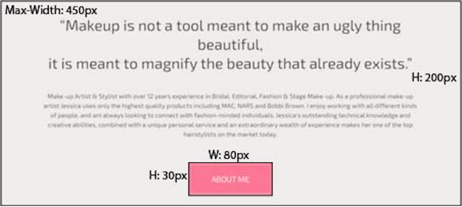
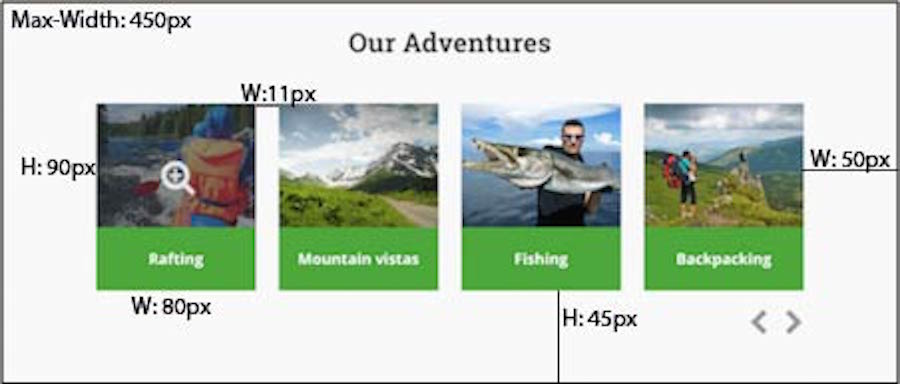
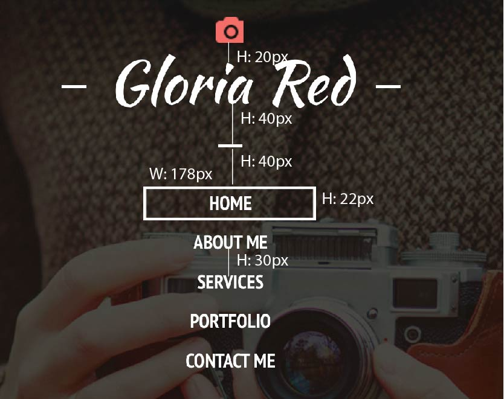
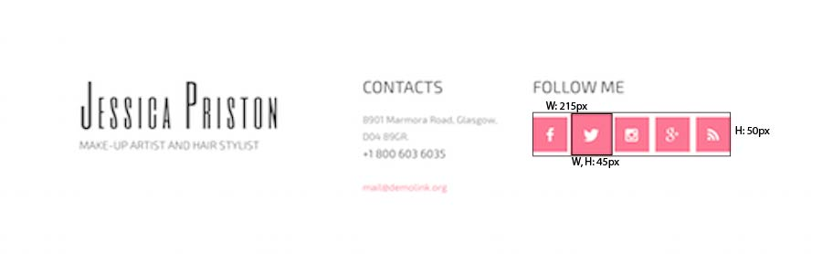

How to use this design to organize information better and how to
position it correctly on a webpage. I would also like to learn how
to make this with only the use of CSS and HTML.
HOW THIS RELATES TO WHAT I HAVE/WILL LEARN IN WDD.
This relates to what I have learned because in a previous class
we learned how to do make an accordion using modal and by using
this as one of my compents, I will learn how to do it purely with
CSS and HTML.
HOW MIGHT I BUILD THIS?
Create the compent by putting it in a section tag.
Give it a width and height.
Use positioning and the zindex in css.
Use transitioning effects in css so the modal pops up and
closes out.
STYLE GUIDE
Colors: #07B4CE, #5E5E67, #D8D6DB, #F6F4F7
Fonts: Ubuntu

Animation button
WHAT I HOPE TO PRACTICE/LEARN?
To learn how to make buttons that draws the attention of the
user and keeps them focused with the use of animation.
HOW THIS RELATES TO WHAT I HAVE/WILL LEARN IN WDD.
This will relate to what I have learned in WDD by using hover
and active effects to make this design from taking previous CSS
classes.
HOW MIGHT I BUILD THIS?
Create a button tag in html.
Apply css design to it to change the color and font.
Use hover and transitioning effects in css.
STYLE GUIDE
Colors: #F0EDEC, #FF7592, #FFFFFF
Fonts: EXO 2, Sans-serif

Image Effects
WHAT I HOPE TO PRACTICE/LEARN?
I hope to achieve this design with only the use of css and have
a well working, well designed photo gallery with animation.
HOW THIS RELATES TO WHAT I HAVE/WILL LEARN IN WDD.
This relates to what I have learned so far by using jQuery on
previous projects to give the same effects.
HOW MIGHT I BUILD THIS?
Create the compent by putting it in a section tag.
Have each image in its own article tag.
Use positioning in css
Use transitioning and hover in css for effects.
STYLE GUIDE
Colors: #4DA23D, #FFFFFF, #95949A
Fonts: Sans-serif

Navigation Bar
WHAT I HOPE TO PRACTICE/LEARN?
I hope to improve my design when it comes to making a navigation
and to learn a more efficent way of excuting this design.
HOW THIS RELATES TO WHAT I HAVE/WILL LEARN IN WDD.
This relates to what I have learned by using the same
information on previous projects to make navigation bars.
HOW MIGHT I BUILD THIS?
Create the compent by putting it in a nav tag.
Create a ul tag with five li tags for each section on the
navigation bar.
Each drop down item with have a nested ul tag followed by
an li tag
STYLE GUIDE
Colors:#FFFFFF
Fonts: Kaushan Script, PT Sans Narrow

Social Media Buttons
WHAT I HOPE TO PRACTICE/LEARN?
I hope to learn some new transitioning methods and to have a
better understanding of how it works. I would also like to learn on
how to position items better on a webpage.
HOW THIS RELATES TO WHAT I HAVE/WILL LEARN IN WDD.
In a previous class, I briefly went over how css transitions
work but I would like to have more knowledge on this practicular
design.
HOW MIGHT I BUILD THIS?
Create the compent by putting it in a section tag.